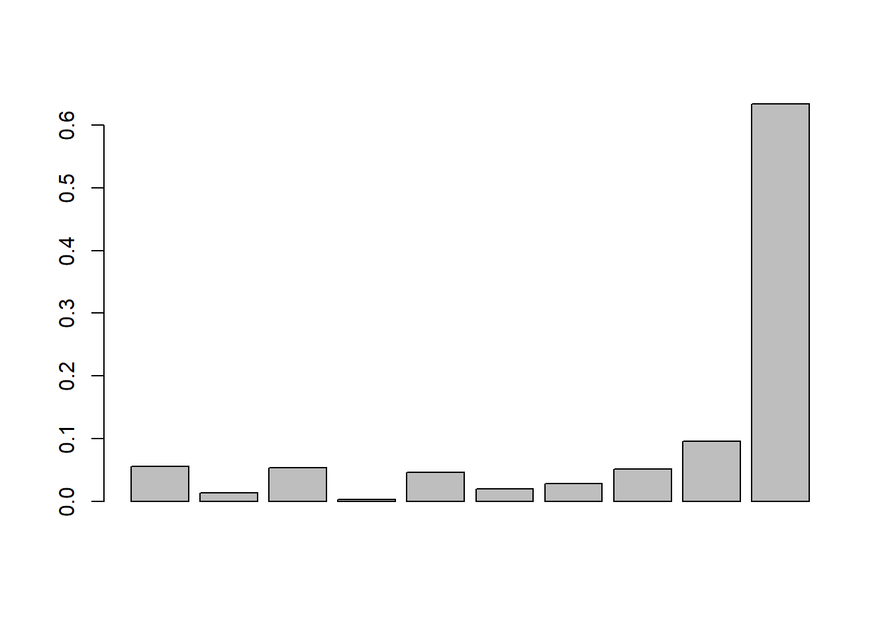
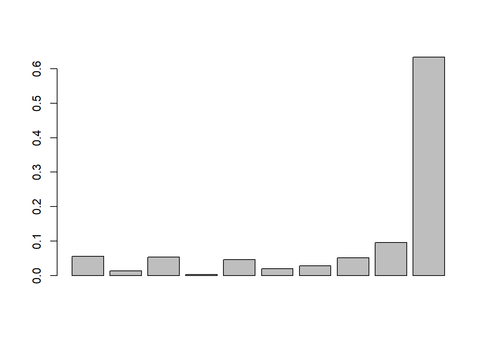

Kapitel 11 Enkel linjär regression
11.1 Regression och lm()
För att genomföra linjära regressionsanalyser i R används funktionen lm() (linear models) som implementerar minstakvadradmetoden och anpassar en linjär modell till data. Funktionen lm() inleds med en formel med formen y ~ x, där \(y\) är den beroende variabeln och \(x\) är oberoende variabeln. Denna formel representerar modellen. Ett krav för lm() är att \(y\) är numerisk, däremot finns ingen sådan restriktion för \(x\). Dock är det viktigt att veta hur analysen påverkas om \(x\) inkluderas som numerisk variabel eller som en faktor.
I regel är arbetsgången sådan att en anpassad regressionsmodell sparas som ett objekt. Därefter extraherar användaren den information som är av vikt för en analys. Detta skiljer R från andra statistikprogram, som direkt ger utförliga resultattabeller. Att arbeta med objekt är emellertid inte en nackdel eftersom det innebär att större fokus läggs på syftet med analysen. Eftersom en en frågeställning i regel kräver mer än en regressionsanalys innebär arbetet med objekt att det på ett enkelt sätt går att systematisera mer omfattande analyser. Förslagsvis används objektnamn som är konsekventa, till exempel kan en regressionanalys sparas i objektet m1 som är förkortning för modell 1.
Med minstakvadrat-metoden ska vi nu anpassa en regressionslinje som beskriver sambandet mellan vikt och längd.
rm(list=ls())
df <- read.csv2("D:/conscriptiondata_sample.csv")
m1 <- lm(weight ~ height, data=df)Den linjära regressionsanalysen är sparad i m1 som ger en högst kortfattad resultatredovisning, i princip enbart koefficienterna redovisas.
m1
>
> Call:
> lm(formula = weight ~ height, data = df)
>
> Coefficients:
> (Intercept) height
> -67.0638 0.7658För att undersöka övrig information sparad i m1 används str().
# Hämta ut regressionskoefficienterna
str(m1)
> List of 12
> $ coefficients : Named num [1:2] -67.064 0.766
> ..- attr(*, "names")= chr [1:2] "(Intercept)" "height"
> $ residuals : Named num [1:400] 14.751 2.535 6.58 0.345 2.282 ...
> ..- attr(*, "names")= chr [1:400] "1" "2" "3" "4" ...
> $ effects : Named num [1:400] -1402.6 96.979 5.801 -0.446 1.541 ...
> ..- attr(*, "names")= chr [1:400] "(Intercept)" "height" "" "" ...
> $ rank : int 2
> $ fitted.values: Named num [1:400] 69.2 55.5 65.4 64.7 67.7 ...
> ..- attr(*, "names")= chr [1:400] "1" "2" "3" "4" ...
> $ assign : int [1:2] 0 1
> $ qr :List of 5
> ..$ qr : num [1:400, 1:2] -20 0.05 0.05 0.05 0.05 0.05 0.05 0.05 0.05 0.05 ...
> .. ..- attr(*, "dimnames")=List of 2
> .. .. ..$ : chr [1:400] "1" "2" "3" "4" ...
> .. .. ..$ : chr [1:2] "(Intercept)" "height"
> .. ..- attr(*, "assign")= int [1:2] 0 1
> ..$ qraux: num [1:2] 1.05 1.15
> ..$ pivot: int [1:2] 1 2
> ..$ tol : num 1e-07
> ..$ rank : int 2
> ..- attr(*, "class")= chr "qr"
> $ df.residual : int 398
> $ xlevels : Named list()
> $ call : language lm(formula = weight ~ height, data = df)
> $ terms :Classes 'terms', 'formula' language weight ~ height
> .. ..- attr(*, "variables")= language list(weight, height)
> .. ..- attr(*, "factors")= int [1:2, 1] 0 1
> .. .. ..- attr(*, "dimnames")=List of 2
> .. .. .. ..$ : chr [1:2] "weight" "height"
> .. .. .. ..$ : chr "height"
> .. ..- attr(*, "term.labels")= chr "height"
> .. ..- attr(*, "order")= int 1
> .. ..- attr(*, "intercept")= int 1
> .. ..- attr(*, "response")= int 1
> .. ..- attr(*, ".Environment")=<environment: R_GlobalEnv>
> .. ..- attr(*, "predvars")= language list(weight, height)
> .. ..- attr(*, "dataClasses")= Named chr [1:2] "numeric" "numeric"
> .. .. ..- attr(*, "names")= chr [1:2] "weight" "height"
> $ model :'data.frame': 400 obs. of 2 variables:
> ..$ weight: int [1:400] 84 58 72 65 70 62 56 71 78 99 ...
> ..$ height: int [1:400] 178 160 173 172 176 176 182 179 173 183 ...
> ..- attr(*, "terms")=Classes 'terms', 'formula' language weight ~ height
> .. .. ..- attr(*, "variables")= language list(weight, height)
> .. .. ..- attr(*, "factors")= int [1:2, 1] 0 1
> .. .. .. ..- attr(*, "dimnames")=List of 2
> .. .. .. .. ..$ : chr [1:2] "weight" "height"
> .. .. .. .. ..$ : chr "height"
> .. .. ..- attr(*, "term.labels")= chr "height"
> .. .. ..- attr(*, "order")= int 1
> .. .. ..- attr(*, "intercept")= int 1
> .. .. ..- attr(*, "response")= int 1
> .. .. ..- attr(*, ".Environment")=<environment: R_GlobalEnv>
> .. .. ..- attr(*, "predvars")= language list(weight, height)
> .. .. ..- attr(*, "dataClasses")= Named chr [1:2] "numeric" "numeric"
> .. .. .. ..- attr(*, "names")= chr [1:2] "weight" "height"
> - attr(*, "class")= chr "lm"De mest relevanta komponenterna är:
- koefficienterna:
m1$coefficients - residualerna:
m1$residuals. - kvarvarande frihetsgrader, \(n-k\) där \(n\) antal observationer och \(k\) är antalet skattade parametrar:
m1$df.residual.
Baserat på koefficienterna \(\hat{\beta}_0=\) -67.064 och \(\hat{\beta}_1=\) 0.766 kan den anpassade regressionslinjen ritas ut. Vidare kan med residualerna och antalet frihetsgrader beräkna residualspridningen \(s_{\varepsilon}\) utifrån att antalet observationer är \(n=\) 400 och antalet skattade parametrar är \(k=2\).
Notera att komponenter ofta består av flera element. Om ett ett flera element är av intresse får vi åtkomst till dessa med [].
# Spridningsdiagram för x och y samt anpassad regressionslinje yhat = b0 + b1*x
plot(df$height, df$weight, xlab = "Längd (cm)", ylab = "Vikt (kg)")
x <- seq(from = 140, to = 250, by = 0.1)
yhat <- m1$coefficients[1] + m1$coefficients[2]*x
lines(x, yhat, col = "blue")
# Beräkna residualspridningen
res.se <- sqrt(sum(m1$residuals^2)/m1$df.residual)
res.se
> [1] 9.165734Tolkning
Koefficienterna: I genomsnitt ökar vikten med 0.8kg om längden ökar med en cm. Interceptet -67.1 saknar en praktisk tolkning eftersom det är den skattade medelvikten för längden noll cm.
- Residualspridning: Vikten för de olika längerna avviker med ungefär 9.2kg från den vikt som kan avläsas från regressionssambandet.
Kommer du ihåg?
- Riktningskoefficienten \(\hat{\beta}_1 = \dfrac{\sum_{i=1}^n(x_i-\bar{x})(y_i-\bar{y})}{\sum_{i=1}^n(x_i-\bar{x})^2}\) kan även definieras i termer av stickprovskovarians och stickprovsvarians \(\hat{\beta}_1 = \dfrac{s_{xy}}{s_x^2}\) och Pearsons korrelationskoefficient och stickprovarianser \(\hat{\beta}_1 = \rho_{xy}\dfrac{s_{y}^2}{s_x^2}\).
- Interceptet beräknas med \(\hat{\beta}_0 = \bar{y} + \hat{\beta_1}\bar{x}\).
- Residualspridningen (residualstandardavvikelsen) \(\sqrt{s_{\varepsilon}^2}\) är ett mått på i vilken utsträckning regressionslinjen är anpassad till observationerna.
- Residualspridningen definieras utifrån residualvariansen \(s_{\varepsilon}^2 =\dfrac{\sum_{i=1}^n (\hat{\varepsilon} - \bar{\hat{\varepsilon}})_i^2}{n-k}\) där det alltid gäller att \(\bar{\hat{\varepsilon}} = 0\), \(n\) är antalet observationer och \(k\) är antalet skattade parametrar i modellen. Differensen \(n-k\) är modellens kvarvarande frihetsgrader (residual degrees of freedom).
- Frihetsgrader kan intuitivt förstås som antalet obereonde bitar av information som tillgänglig för att estimatera ytterligare en bit information. I statistik kan översättas till att frihetsgrader är antalet oberoende observationer som är tillgängliga för att skatta en parameter i populationen.
- Minstakvadrat-metoden kan alltid användas som en rent numerisk metod för att analysera data i ett stickprov. Det är först när vid inferens som ytterligare antaganden krävs.
11.2 Regressions resultat
Funktionen lm() är begränsad, men med andra funktioner kan ytterligare information extraheras från ett objekt. Vi ska nu se på funktionen summary(). Som vanligt sparas resultatet från en funktion i ett objekt, i detta fall sum_m1 (summary av modell 1).
sum_m1 <- summary(m1)
sum_m1>
> Call:
> lm(formula = weight ~ height, data = df)
>
> Residuals:
> Min 1Q Median 3Q Max
> -16.313 -6.216 -1.249 4.420 47.219
>
> Coefficients:
> Estimate Std. Error t value Pr(>|t|)
> (Intercept) -67.06380 12.97459 -5.169 3.74e-07 ***
> height 0.76580 0.07238 10.581 < 2e-16 ***
> ---
> Signif. codes: 0 '***' 0.001 '**' 0.01 '*' 0.05 '.' 0.1 ' ' 1
>
> Residual standard error: 9.166 on 398 degrees of freedom
> Multiple R-squared: 0.2195, Adjusted R-squared: 0.2176
> F-statistic: 111.9 on 1 and 398 DF, p-value: < 2.2e-16Resultatredovisningen påminner nu i större utsträckning om en utskrift från traditionella statistikprogram, om än något mer avskalad. Det som redovisas är
- Parameterskattningarna \(\hat{\beta}_0=\) -67.064 och \(\hat{\beta}_1=\) 0.766,
- Medelfelen för parameterskattningarna \(\sqrt{\hat{V}(\hat{\beta}_0)}\) = 12.975, \(\sqrt{\hat{V}(\hat{\beta}_1)}\) = 0.072
- \(t\)-värdena \(t_{\beta_0}=\hat{\beta}_0/\sqrt{\hat{V}(\hat{\beta}_0)}=\) -5.169 och \(t_{\beta_1}=\hat{\beta}_1/\sqrt{\hat{V}(\hat{\beta}_1)}=\) 10.581,
- \(p\)-värdena för \(\hat{\beta}_0\) och \(\hat{\beta}_1\) om \(H_0:\beta_0=0\) och \(H_0:\beta_1=0\), två-sidiga mothypoteser och \(t\)-fördelningen med \(n-k\) frihetsgrader där \(k\) är antalet skattade parametrar, i detta fall \(\beta_0\) och \(\beta_1\).
- Residualstandardavvikelsen \(s_{\varepsilon} =\) 9.166
- Förklaringsgraden \(R^2=\) 0.22
- Justerad förklaringgrad \(R^2_{adj}=\) 0.218
- \(F\)-testet för hela modellen med \(F_{obs}=\) 111.95 och tillhörande \(p\)-värde från \(F\)-fördelningen under nollhypotesen med frihetsgraderna 1 och 398 och \(H_0:\beta_0=\beta_1=0\).
Slutligen återstår två delar i utskriften som inte förklarats:
- Överst beskrivs residualerna utifrån några lägesmått. Normalt sett gör vi i en analys en mer ingående residualanalys, vilket gör denna information något överflödig.
- I resultatbeskrivningen inkluderas stjärnor som anger hur lågt \(p\)-värdet är utifrån vad om är praxis inom många ämnesområden, dvs * om \(p<0.05\), ** om \(p<0.01\) och *** om \(p<0.001\).
Funktionen summary sparar dock ytterligare resultat från regressionsanalysen objektet sum_m1 och därför använder vi str() för undersöka vad detta är.
str(sum_m1)
> List of 11
> $ call : language lm(formula = weight ~ height, data = df)
> $ terms :Classes 'terms', 'formula' language weight ~ height
> .. ..- attr(*, "variables")= language list(weight, height)
> .. ..- attr(*, "factors")= int [1:2, 1] 0 1
> .. .. ..- attr(*, "dimnames")=List of 2
> .. .. .. ..$ : chr [1:2] "weight" "height"
> .. .. .. ..$ : chr "height"
> .. ..- attr(*, "term.labels")= chr "height"
> .. ..- attr(*, "order")= int 1
> .. ..- attr(*, "intercept")= int 1
> .. ..- attr(*, "response")= int 1
> .. ..- attr(*, ".Environment")=<environment: R_GlobalEnv>
> .. ..- attr(*, "predvars")= language list(weight, height)
> .. ..- attr(*, "dataClasses")= Named chr [1:2] "numeric" "numeric"
> .. .. ..- attr(*, "names")= chr [1:2] "weight" "height"
> $ residuals : Named num [1:400] 14.751 2.535 6.58 0.345 2.282 ...
> ..- attr(*, "names")= chr [1:400] "1" "2" "3" "4" ...
> $ coefficients : num [1:2, 1:4] -67.0638 0.7658 12.9746 0.0724 -5.1689 ...
> ..- attr(*, "dimnames")=List of 2
> .. ..$ : chr [1:2] "(Intercept)" "height"
> .. ..$ : chr [1:4] "Estimate" "Std. Error" "t value" "Pr(>|t|)"
> $ aliased : Named logi [1:2] FALSE FALSE
> ..- attr(*, "names")= chr [1:2] "(Intercept)" "height"
> $ sigma : num 9.17
> $ df : int [1:3] 2 398 2
> $ r.squared : num 0.22
> $ adj.r.squared: num 0.218
> $ fstatistic : Named num [1:3] 112 1 398
> ..- attr(*, "names")= chr [1:3] "value" "numdf" "dendf"
> $ cov.unscaled : num [1:2, 1:2] 2.00 -1.12e-02 -1.12e-02 6.24e-05
> ..- attr(*, "dimnames")=List of 2
> .. ..$ : chr [1:2] "(Intercept)" "height"
> .. ..$ : chr [1:2] "(Intercept)" "height"
> - attr(*, "class")= chr "summary.lm"Följande väsentliga komponenter finns sparade i objektet sum_m1.
- Residualerna:
sum_m1$residuals - Frihetsgrader:
sum_m1$df - Förklaringsgraden \(R^2\):
sum_m1$r.squared - Justerad förklaringsgrad \(R^2_{adj}\):
sum_m1$ajd.r.squared. Denna är relevant vid multipel linjär regression. - Residualspridningen \(s_{\varepsilon}\):
sum_m1$sigma - F-statistikan:
sum_m1$fstatisticsom består av tre elementen \(F_{obs}\), frihetsgrader som används av modellen och kvarvarande frihetsgrader. Denna är relevant vid multipel linjär regression.
Dessutom har vi
- Inferens för koefficenterna:
sum_m1$coefficientssom ger en matris med information. För att hämta resultat krävs att användaren anger med[]vilka delar av matrisen man önskar extrahera. Vi exemplifierar med medelfelen för skattningarna.
# Medelfel från model 1
se_beta <- sum_m1$coefficients[,2]
se_beta
> (Intercept) height
> 12.97458763 0.07237785Medelfelen som extraheras är \(\sqrt{\hat{V}(\hat{\beta}_0)}=\) 12.9746 och \(\sqrt{\hat{V}(\hat{\beta}_1)}=\) 0.0724. För att erhålla de skattade varianserna kan vi kvadrera medelfelen.
Tolkning
- p-värdet: Givet att det inte finns något (linjärt) samband mellan längd och vikt är det mycket låg sannolikhet att observera ett så stort samband som det vi observerar eller större. Data stämmer således dåligt överens med modellen om inget samband!
- Förklaringsgraden: Av variationen i vikt kan 22% förklaras av variationen i längd.
Kommer du ihåg?
- Medelfelet \(\sqrt{\hat{V}(\hat{\beta}_1)}\) skattar standardavvikelsen i samplingfördelningen för \(\hat{\beta}_1\), som är fördelningen av alla \(\hat{\beta}_1\) vid upprepade stickprovsdragningar.
- Den skattade variansen kan \(\hat{V}(\hat{\beta}_1) = \dfrac{s^2_{\varepsilon}}{\sum_{i=1}^n (x_i - \bar{x})^2}\) kan skrivas i termer av residualvarians och stickprovsvarians \(\dfrac{s^2_{\varepsilon}}{(n-1)s^2_x}\).
- I många ämnesområdena refereras det ofta till trestjärnig, tvåstjärnig och enstjärnig signifikans. Detta sätt att kategorisera resultat rekommenderas inte, utan stjärnorna ska i vårt fall enbart ses som ett hjälpmedel för läsaren. Redovisa alltid, om möjligt, de faktiska \(p\)-värdena.
- Praktiskt signifikans är inte samma som statistisk signifikans. Först punktskattningarna, sedan \(p\)-värden.
11.3 Konfidensintervall
För att skapa ett tvåsidigt konfidensintervall för parametrarna i en linjär regression används funktionen confint() på ett objekt från lm(). Med argumentet level anges konfidensgraden. Resultatet sparas i en matris med parametrarna radvis och i kolumnerna anges nedre och övre gränserna för konfidensintervallet.
KI <- confint(m1, level = 0.95)
KI
> 2.5 % 97.5 %
> (Intercept) -92.5710915 -41.5565096
> height 0.6235134 0.9080948Funktionen confint() förenklar, men det naturligtvis även att direkt använda formeln \[\hat{\beta}_1 \pm z_{\alpha/2}\sqrt{\hat{V}(\hat{\beta}_1)}\] för att genomföra en intervallskattning i R.
zalpha2 <- qnorm(0.975)
LL <- m1$coefficients[2] - zalpha2*se_beta[2]
UL <- m1$coefficients[2] + zalpha2*se_beta[2]
KI_approx_normal <- c(LL, UL)
KI_approx_normal
> height height
> 0.6239461 0.9076621Det finns en liten skillnad mellan metoderna och det beror på att confint() använder fördelningen \(t_{\alpha/2,(n-k)}\), medan vår manuella beräkning utnyttjar tabellvärden från en approximiativ standardiserad normalfördelning. Används qt(0.975, df = sum_m1$df[2]) istället för qnorm(0.975) så erhålls exakt samma resulat som confint(). I större stickprov finns ingen skillnad av betydelse.
Tolkning
- Konfidensintervall: Med 95 säkerhet ökar vikten i genomsnitt mellan 0.62kg till 0.91kg om längden ökar med en cm.
Kommer du ihåg?
- Ett konfidensintervall ges av formeln \(estimat \pm tabellvärde\times medelfel\).
- Ett konfidensintervall tolkas i termer av säkerthet, inte sannolikhet. Antingen täcker det framräknade intervallet parametern i populationen, eller så täcker intervallet inte den. Intervallet har dock egenskapen att om vi tänker oss att undersökningen upprepas kommer vi i långa loppet i 95% av fallen erhålla intervall som täcker parametern i populationen.
- Konfidensgraden 95% är vanligast, men valet konfidensgrad beror på behovet av precision.
- Presentera om möjligt alltid konfidensintervall tillsammans med dina punktskattningar! Konfidensintervall är i regel mer informativa än \(p\)-värden.
11.4 Residualanalys
En regressionsanalys bygger på att ett antal förutsättningar är uppfyllda, beroende på den typ av inferens man önskar göra.
- Linjäritet. Detta kan undersöka genom att studera residualerna.
- Oberoende fel. Genom att studera residualernas ordning kan
- Heteroskedasticitet
- Normalitet.
# Figurer för residualanalys.
plot(m1$fitted.value, m1$residuals, main = "Residuals vs Fitted Values")
qqnorm(m1$residuals, main="Normality")

- Varken linjäritets eller heteroskedasticitet verkar utgöra något problem.
- Normalitetsantagandet verkar visserligen inte vara uppfyllt, men eftersom stickprovsstorleken är stor innebär centrala gränsvärdessatsen att samplingfördelningen för \(\hat{\beta}_1\) är approximativt normalfördelad.
Det är även möjligt att använda Rs funktion plot() på m1 som då ger fyra residualplottar istället för två. I tur och ordning anges:
- Residuals vs fitted för att studera linjäritet. Den röda linjen är enbart ett glidande medelvärde för hjälpa läsaren.
- En qq-plot för att studera normalitet.
- En residualplot för att studera heteroskedasticitet, som är något tydligare än residuals vs fitted. Om den röda linjen är ett glidande medelvärde och bör
- En residualplot som visar inflytelserika observationer, dock ej alltid outliers även om ofta så är fallet. Vi letar efter residualer som befinner sig i övre och nedre högre hörnen som är utanför en streckad linje (Cook’s Distance). Om dessa observationer tas bort kan regressionsresultatet förändras.
De två senare figurer kan vara av vikt, speciellt den med inflytelserika observationer.

 

Tolkning
- Förutsättningar: Om vi utifrån ett deskriptivt syfte önskar studera sambandet mellan längd och vikt kan vi lita på analysen. Sambandet verkar vara linjärt och det finns ingen heteroskedasticitet som leder till felaktiga skattningar av medelfelen. Bristen på normalitet uppvägs av stickprovsstorleken.
Kommentarer
- Residualanalys är viktigt framför allt vid små stickprov och vid multipel regression. Vid enkel linjär regression upptäcks problem i regel
- Ha rutin på alltid göra en residualanalys för att försäkra dig själv om resultaten går att lita på. Det är dock inte nödvändigt att inkludera en residualanalys i en rapport eller vetenskaplig artikel. I en uppsats bör residualanalyser finnas med i en bilaga!
11.5 Skattning av betingade medelvärden
Målet är att skatta det betingade medelvärdet \(\mu_{y|x=x_p}\) i modellen \[E(y|x=x_p) = \beta_0 + \beta_1 x_p.\]
Givet att \(\hat{\beta}_0\) och \(\hat{\beta}_1\) är väntevärdesriktiga skattningarna av \(\beta_0\) och \(\beta_1\) så är \[\hat{y} = \hat{\beta}_0 + \hat{\beta}_1\] en väntevärdesriktig skattning av \(\mu_{y|X=x_p}\). Baserat på koefficienterna i m1 går det enkelt att beräkna \(\hat{y}\). Observera att detta de facto är värdet på regressionslinjen för ett givet \(x\)-värde.
# Skattning för E(y|x=p) om xp = 180
yhat_coef <- m1$coefficients[1] + m1$coefficients[2]*180
yhat_coef
> (Intercept)
> 70.78093En mer flexibel metod är att dock att använda funktionen predict():
- Använd lm() för att skatta \(\beta_0\) och \(\beta_1\) och spara analysen i ett objekt, t ex m1.
- Skapa ett nytt data frame, t ex new, innehållande en \(x\)-variabel med värdet \(x_p\). Namnet på variabeln i new måste vara exakt samma som namnet i den sparade modellen i m1.
- Använd m1 och new i funktionen predict.
xp <- 180
new <- data.frame(height = xp)
yhat <- predict(m1, new)
yhat
> 1
> 70.78093Vi ser att detta ger samma resultat som yhat_coef och yhat. Medelvikten för 18-åriga män som är 180cm långa är = 70.78
Detta säger dock inget om precisionen i skattningen. Med tillhägget se.fit = TRUE erhålls även medelfelet för skattningen.
yhat <- predict(m1, new, se.fit = TRUE)
yhat
> $fit
> 1
> 70.78093
>
> $se.fit
> [1] 0.4623976
>
> $df
> [1] 398
>
> $residual.scale
> [1] 9.165734Följande två väsentliga komponenter finns nu:
- Skattningen av betingade medelvärdet:
yhat$fit - Medelfelet för skattningen av det betingade medelvärdet:
yhat$se.fit
Medelvikten för 18-åriga män som är 180cm långa skattas till = 70.78kg och medelfelet för denna skattning är 0.462. För att erhålla ett konfidensintervall för medelvikten givet en viss kroppslängd kan man lägga till interval = "confidence" i predict().
yhat <- predict(m1, new, se.fit = TRUE, interval = "confidence", level = 0.95)
yhat
> $fit
> fit lwr upr
> 1 70.78093 69.87189 71.68998
>
> $se.fit
> [1] 0.4623976
>
> $df
> [1] 398
>
> $residual.scale
> [1] 9.165734Komponenten $fit$ består nu av tre delar, där yhat$fit[1] är skattningen av medelvärdet, yhat$fit[2] den nedre och yhat$fit[3] den övre gränsen av det framräknade konfidensintervallet. Således kan vi säga att med 95% säkerhet är medelvikten för 18-åriga män som är 180cm mellan 69.87 och 71.69kg.
Detta går även att räkna ut manuellt baserat på den formler som vi har.
# Hämtar Residualspridningen från objektet sum_m1
yhat.se <- sqrt( sum_m1$sigma^2*( 1/(m1$df.residual + 2) + (xp - mean(df$height))^2/sum( (df$height - mean(df$height) )^2 )))
z <- qnorm(0.975)
yhat.LL <- yhat$fit[1] - z*yhat.se
yhat.UL <- yhat$fit[1] + z*yhat.se
yhat_approx_normal <- c(yhat.LL, yhat.UL)
yhat_approx_normal
> [1] 69.87465 71.68722Om man önskar göra skattningar av det betingade medelvärdet för flera \(x\)-värden konstruerar vi ett data frame med flera \(x_p\). Observera att om detta görs för alla \(x\) så är detta regressionlinjen!
xps <- seq(from = 150, to = 230, by = 1)
news <- data.frame(height = xps)
yhat_band <- predict(m1, news, se.fit = TRUE, interval = "confidence")
yhat_band$fit[,1]
> 1 2 3 4 5 6 7
> 47.80681 48.57262 49.33842 50.10422 50.87003 51.63583 52.40164
> 8 9 10 11 12 13 14
> 53.16744 53.93324 54.69905 55.46485 56.23066 56.99646 57.76226
> 15 16 17 18 19 20 21
> 58.52807 59.29387 60.05968 60.82548 61.59128 62.35709 63.12289
> 22 23 24 25 26 27 28
> 63.88870 64.65450 65.42030 66.18611 66.95191 67.71772 68.48352
> 29 30 31 32 33 34 35
> 69.24933 70.01513 70.78093 71.54674 72.31254 73.07835 73.84415
> 36 37 38 39 40 41 42
> 74.60995 75.37576 76.14156 76.90737 77.67317 78.43897 79.20478
> 43 44 45 46 47 48 49
> 79.97058 80.73639 81.50219 82.26799 83.03380 83.79960 84.56541
> 50 51 52 53 54 55 56
> 85.33121 86.09702 86.86282 87.62862 88.39443 89.16023 89.92604
> 57 58 59 60 61 62 63
> 90.69184 91.45764 92.22345 92.98925 93.75506 94.52086 95.28666
> 64 65 66 67 68 69 70
> 96.05247 96.81827 97.58408 98.34988 99.11568 99.88149 100.64729
> 71 72 73 74 75 76 77
> 101.41310 102.17890 102.94470 103.71051 104.47631 105.24212 106.00792
> 78 79 80 81
> 106.77373 107.53953 108.30533 109.07114Det följer av ovanstående att vi på motsvarande sätt kan för varje betingat medelvärde skapa konfidensintervall. Titta i objektet yhat_band$fit. Då ett sådant resultat är svårt att överblicka brukar sådana presenteras grafiskt, där vi först skapar ett spridningsdiagram, lägger till regressionslinjen, sedan ritar ut de nedre och övre gränser för de betingade medelvärde med funktionen lines().
plot(df$height, df$weight, xlab = "Längd (cm)", ylab = "Vikt (kg)", , ylim = c(30, 130), main = "95% KI")
abline(m1)
lines(xps, yhat_band$fit[,2], col="blue", lty=2)
lines(xps, yhat_band$fit[,3], col="blue", lty=2)
Tolkning
- Betingade medelvärdet: Enligt modellen är medelvikten bland 18-åriga män som är 180cm 70.7809335kg.
- Konfidensintervall: Med 95% säkerhet är medelvikten för 18-åriga män som är 180cm mellan 69.87 och 71.69kg.
Kommer du ihåg?
- Vid enkel linjär regression är variansen för skattningen av det betingade medelvärdet givet \(x=x_p\). \[\hat{V}(\hat{y}) = s^2_\varepsilon\left(\dfrac{1}{n} + \dfrac{(x_p-\bar{x})^2}{\sum_{i=1}^n (x_i - \bar{x})^2} \right),\] där \(s_\varepsilon^2\) är residualvariansen.
- Bäst precision för skattningen av det betingade medelvärdet erhålls när vi betingar på medelvärdet för \(x\). Då blir den andra termen i variansen noll Ju längre bort från medelvärdet, desto sämre precision. Detta illustreras tydligt om vi ser på konfidensintervallen.
- Beräkningarna för konfidensintervall baseras på normalapproximation där \(\hat{y}\) är approximativt normalfördelad i stora stickprov.
- I stora stickprov är \[z=\dfrac{\hat{y}-\mu^0_{y|x=xp}}{\sqrt{\hat{V}(\hat{y})}}\] appoximativt \(N(0,1)\) om nollhypotesen \(H_0: \mu_{y|x=xp} = \mu^0_{y|x=x_p}\) är sann. Notera att denna formulering av nollhypotesen döljer det viktiga antagandet att den linjära regressionsmodellen i övrigt är sann.
11.6 Prediktion
Prediktion innebär en förutsägelse för vilket värde en ny observation kommer att ha, dvs \(y^*_i\), givet information om \(x_i\). Om linjär regression används för prediktion bygger prediktionen på skattningen av modellen \[y_i = \beta_0 + \beta_1 x + \varepsilon_i\]
Det visar sig att prediktionen blir samma som skattningen för det betingade medelvärde. Anta att vi önskar göra prediktion avseende vikten för en 18-årig man som mönstrar. Om vi vet mannen är 180 cm så är prediktionen för vikten. Vår bästa gissning.
För att erhålla ett prediktionsintervall för en individs vikt givet individens kroppslängd kan man lägga till interval = "prediction" i predict().
xp <- 180
new <- data.frame(height = xp)
y_pred <- predict(m1, new, se.fit = TRUE, interval = "prediction", level = 0.95)
y_pred
> $fit
> fit lwr upr
> 1 70.78093 52.73871 88.82315
>
> $se.fit
> [1] 0.4623976
>
> $df
> [1] 398
>
> $residual.scale
> [1] 9.165734Komponenten $fit$ består av tre delar, där y_pred$fit[1] är prediktionen, y_pred$fit[2] den nedre och y_pred$fit[3] den övre gränsen av det framräknade prediktionsintervallet Således kan vi säga att givet att vi mäter längden för en 18-årig man till 180cm är så är vikten med 95% sannolikhet mellan 52.74 och 88.82kg.
Detta går även att räkna ut manuellt baserat på den formler som vi har.
# Hämtar Residualspridningen från objektet sum_m1
ypred.se <- sqrt(sum_m1$sigma^2 + sum_m1$sigma^2*( 1/(m1$df.residual + 2) + (xp - mean(df$height))^2/sum( (df$height - mean(df$height) )^2 )))
z <- qnorm(0.975)
ypred.LL <- yhat$fit[1] - z*ypred.se
ypred.UL <- yhat$fit[1] + z*ypred.se
ypred_PI <- c(yhat.LL, yhat.UL)
ypred_PI
> [1] 69.87465 71.68722Om man önskar göra skattningar av det betingade medelvärdet för flera \(x\)-värden konstruerar vi ett data frame med flera \(x_p\). Observera att om detta görs för alla \(x\) så är detta regressionlinjen!
xps <- seq(from = 150, to = 230, by = 1)
news <- data.frame(height = xps)
ypred_band <- predict(m1, news, se.fit = TRUE, interval = "prediction")
ypred_band$fit[,1]
> 1 2 3 4 5 6 7
> 47.80681 48.57262 49.33842 50.10422 50.87003 51.63583 52.40164
> 8 9 10 11 12 13 14
> 53.16744 53.93324 54.69905 55.46485 56.23066 56.99646 57.76226
> 15 16 17 18 19 20 21
> 58.52807 59.29387 60.05968 60.82548 61.59128 62.35709 63.12289
> 22 23 24 25 26 27 28
> 63.88870 64.65450 65.42030 66.18611 66.95191 67.71772 68.48352
> 29 30 31 32 33 34 35
> 69.24933 70.01513 70.78093 71.54674 72.31254 73.07835 73.84415
> 36 37 38 39 40 41 42
> 74.60995 75.37576 76.14156 76.90737 77.67317 78.43897 79.20478
> 43 44 45 46 47 48 49
> 79.97058 80.73639 81.50219 82.26799 83.03380 83.79960 84.56541
> 50 51 52 53 54 55 56
> 85.33121 86.09702 86.86282 87.62862 88.39443 89.16023 89.92604
> 57 58 59 60 61 62 63
> 90.69184 91.45764 92.22345 92.98925 93.75506 94.52086 95.28666
> 64 65 66 67 68 69 70
> 96.05247 96.81827 97.58408 98.34988 99.11568 99.88149 100.64729
> 71 72 73 74 75 76 77
> 101.41310 102.17890 102.94470 103.71051 104.47631 105.24212 106.00792
> 78 79 80 81
> 106.77373 107.53953 108.30533 109.07114Det följer av ovanstående att vi på motsvarande sätt kan för varje betingat medelvärde skapa konfidensintervall. Titta i objektet ypred_band$fit. Då ett sådant resultat är svårt att överblicka brukar sådana presenteras grafiskt, där vi först skapar ett spridningsdiagram, lägger till regressionslinjen, sedan ritar ut de nedre och övre gränser för de betingade medelvärde med funktionen lines().
plot(df$height, df$weight, xlab = "Längd (cm)", ylab = "Vikt (kg)",
main = "95% PI", ylim = c(30, 130))
abline(m1)
lines(xps, ypred_band$fit[,2], col="blue", lty=3)
lines(xps, ypred_band$fit[,3], col="blue", lty=3)För ytterligare klargöra skillnaden mellan prediktion och skattning av begingat medelvärdet illustrerar med sambandet mellan begåvingstest, A och B vid mönstring. En prediktion innebär att om en individ på Test A får \(x_i\) poäng, så gör vi en förutsägelse för vad den individen kommer erhålla när individen gör \(Test B\). Detta är olikt skattning om betingade medelsom säger att individer med \(x\) poäng på Test A har i genomsnitt \(y\) poäng på Test B.
Tolkning
- Betingade medelvärdet: Om vi mäter en mönstrande man och denna är 180cm så är prediktion för denna individs vikt att vikten är 70.7809335kg.
- Prediktionsintervall: Med 95% sannolikhet är vikten för 18-årig män som är 180cm mellan 52.74 och 88.82kg.
Kommer du ihåg?
- Vid enkel linjär regression är variansen för en prediktion givet \(x=x_p\). \[\hat{V}(y^*) = \hat{V}(\hat{y}) + s^2_\varepsilon = s^2_\varepsilon\left(\dfrac{1}{n} + \dfrac{(x_p-\bar{x})^2}{\sum_{i=1}^n (x_i - \bar{x})^2} \right) + s^2_\varepsilon,\] där \(s_\varepsilon^2\) är residualvariansen. Notera hur detta korresponderar till modellen \[y_i = \beta_0 + \beta_1x_i + \varepsilon_i\] där denna första delen berör precisionen av skattningarna av \(\beta_0\)+ \(\beta_1\) och \(s_\varepsilon^2\) berör variationen i feltermen från vilken en ny observation erhålls. Precisionen an den första delen kan vi påverka med stickprovstorleken. Den andra delen Den första delen kan vi på
- Stickprovsstorleken påverkar endast \(\hat{V}(\hat{y})\), inte \(s^2_\varepsilon\). Om den skattade modellen ger stor spridning i termer av oförklarad variation så kommer ett större stickprov inte hjälpa oss för att göra prediktioner av enskilda indivder.
- Beräkningarna för prediktionsintervall kräver att \(\varepsilon\) är normalfördelad. Centrala gränsvärdessatsen gäller inte!
- På grund av skattning av betingat medelvärde och prediktion är förvillande lika, förväxlas dessa ofta. Även om punktskattningarna är samma så är syfte och tolkning olika!
11.7 Binära oberoende variabler
En binär variabel kan inkluderas både som numerisk och som faktor i funktionen lm()
För en binär variabel kodad numeriskt 0-1 är kategorin med 0 automatiskt referenskategorin. Riktningskoefficienten tolkas som skillnaden tolkas som skillnad mellan medelvärden.
# Inkludera oberoende variabel som numerisk 0 1
# Kollar variabeln ifall du inte kommer ihåg kodningen.
str(df$sbp130)
> int [1:400] 0 1 0 1 0 1 0 0 1 1 ...
m1_bin <- lm(dbp ~ sbp130, data = df)
summary(m1_bin)
>
> Call:
> lm(formula = dbp ~ sbp130, data = df)
>
> Residuals:
> Min 1Q Median 3Q Max
> -22.7230 -7.1658 -0.4444 7.2770 23.8342
>
> Coefficients:
> Estimate Std. Error t value Pr(>|t|)
> (Intercept) 64.7230 0.6710 96.455 <2e-16 ***
> sbp130 2.4428 0.9814 2.489 0.0132 *
> ---
> Signif. codes: 0 '***' 0.001 '**' 0.01 '*' 0.05 '.' 0.1 ' ' 1
>
> Residual standard error: 9.793 on 398 degrees of freedom
> Multiple R-squared: 0.01533, Adjusted R-squared: 0.01285
> F-statistic: 6.196 on 1 and 398 DF, p-value: 0.01321Individer med högt systoliskt blodtryck har i genomsnitt 2.44 högre blodtryck jämfört med dem som inte har högt systoliskt blodtryck.
Notera att variabeln sbp130 består av heltal, vilket du kan se om du tillämpar funktionen str(). I praktiken har distinktionen numerisk eller helttal sällan betydelse, utan det viktigaste motivet är att det anger hur data sparas, dvs heltal tar mindre minne.
För att ändra referensgrupp om vi arbetar med 0-1-variabler krävs omkodning, mer specifikt en reversering av kategorierna.
# Omkodning av 0-1-variabel
df$sbpnot130 <- NA
df$sbpnot130[df$sbp130 == 1] <- 0
df$sbpnot130[df$sbp130 == 0] <- 1
m1_bin2 <- lm(dbp ~ sbpnot130, data = df)
m1_bin2
>
> Call:
> lm(formula = dbp ~ sbpnot130, data = df)
>
> Coefficients:
> (Intercept) sbpnot130
> 67.166 -2.443Individer som inte har högt systoliskt blodtryck har i genomsnitt -2.44 lägre blodtryck jämfört med dem som har högt systoliskt blodtryck.
Istället för inkludera 0-1-variabeln högt systoliskt blodtryck använder vi nu faktor-variabel sbphigh. Kategorierna har ingen numerisk tolkning och skulle vi mean(df$sbphigh) skulle ge ett felmeddelande. Däremot skulle mean(df$sbp130) ge andelen med högt systoliskt blodtryck. Det är emellertid inga problem att inkludera faktorvariabeln i lm() utan den jämför direkt mot en referenskategori.
# Inkludera oberoende variabel som numerisk 0 1
m1_bin3 <- lm(dbp ~ sbphigh, data = df)
m1_bin3
>
> Call:
> lm(formula = dbp ~ sbphigh, data = df)
>
> Coefficients:
> (Intercept) sbphigh>= 130
> 64.723 2.443Återigen ser vi att individer med högt systoliskt blodtryck har i genomsnitt 2.44 högre blodtryck jämfört med dem som inte har högt systoliskt blodtryck. Det som har ändrats är namnet på koefficienten. Om vi använder summary eller str() på objektet m1_bin3och jämför med m1_bin1 så ser vi några skillnader som beskriver att vi har att göra med faktor, men resultatet i sig påverkas inte.
För att ändra referenskategorin för en faktor-variabel används funktionen relevel(). Vi sätter nu högt systoliskt blodtryck som referenskategori.
# Inkludera oberoende variabel som numerisk 0 1
df$sbphigh <- relevel(df$sbphigh, ref = ">= 130")
m1_bin4 <- lm(dbp ~ sbphigh, data = df)
m1_bin4
>
> Call:
> lm(formula = dbp ~ sbphigh, data = df)
>
> Coefficients:
> (Intercept) sbphigh< 130
> 67.166 -2.443Resultatet är nu motsvarande som när vi revereserade kodning för 0-1-variabeln.
Tolkning
- Punktskattning: Om en variabeln är kodad som 0-1
Kommer du ihåg?
- En binär variabel i en enkel linjär regression med kodningen 0,1 ger skillnaden i medelvärden mellan två grupper. Detta är ekvivalent med \(t\)-test med lika varianser.
- Många gånger förenklas kod, i termer att koden blir mer kompakt, om man använder faktorer istället för 0-1-variabler. Emellertid är risken större för fel om man inte är bekväm med R.